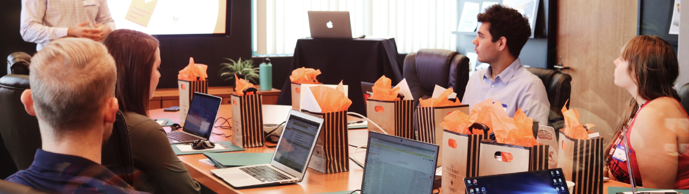

Ideal Job
Ideal Job Table
| Student name | Job name | Career plan | Common elements among these jobs | Differences between these jobs | Similarities between career plans |
|---|---|---|---|---|---|
| Aung Kyaw Zan | Business analyst | My plan is to work work start from a business analyst internship position and work my way up from a junior business analyst to a senior business analyst over the year.
Throughout the internship and junior business analyst years, I will need to hone skills related to my field of work. E.g. Stakeholder analyst, Agile styl, budgeting. |
Communicating with stakeholders. Working with different departments. Working as a team. Requires great communication with customers. Requires a few years of experience as a junior or internship business analyst to be accepted in the position. |
Requires proper knowledge of the systems. Building relationships with stakeholders |
Requires a related IT or business degree. Requires two or more experience. |
| Carissa Imperial | University librarian | I plan on completing a Bachelor of IT, and then Master of Business information systems (with a Library Science Specialization), as completing a bachelor degree in an IT field enables you to complete the master of business information systems degree faster (in 1.5 years instead of 2 years). Next, I will apply for a public librarian position (as prior experience is required to become a university librarian) and eventually move onto becoming a university librarian (after having around 3-5 years of experience as a public librarian). | Need to be creativity and when teaching students how to improve their research skills (creativity is also needed in the senior character artist position as well) Need to be aware of budget for acquiring resources for the library (new computers, books, etc) (great planning skills) Needs strong customer service (great communication skills) Need to be capable of working independently Need to be able to work in a team (other librarians and technicians) Needs a good attention to detail (especially when teaching students/staff how to improve their research skills) Good problem solving skills (eg. if someone wants to borrow a book and their library card isn’t working) Multi-tasking |
Involves training students/clients on how to use electronic resources, as well as how to improve their research skills Need to be constantly updated on current library trends and problems (eg. by attending ALIA industry events) Needs knowledge of the library hierarchy (eg. What the senior/head librarian expects of low ranking librarians), as well as how library resources are acquired, and library standards Managing clients’ access to online resources (like ebooks or audiobooks on eLibraries) To become a librarian, you need to get an ALIA accredited course (Australian Library Information Association) This job generally is done in person, at the university that they are working at |
Needs a tertiary level of education (we all generally start off with a bachelor degree) Needs previous experience (I will need 5 years of experience being a public or private librarian prior to becoming a university librarian) |
| Emre Erdogan | Search Ads 360 - Google | After completing my Bachelor's Degree, I will need four years of experience. Within those years, I need to work in something relating to Account management or Digital Marketing specialist. The budgets for the projects I work on must be above 500k dollars. Once I have experience in this field, I can apply for the Search 360 position. | Creativity is also needed when coming up with new marketing strategies and tailoring to different audiences Excellent communication skills are needed Teamwork is a must in this roles as you will be interacting with multiple people for projects (SCRUM Teams, Teams etc) Coming up with new and updating high level marketing strategies Understanding how budgets work is important as marketing campaigns will need budget allocation |
This job requires good communication regarding technical to business explanations to stakeholders Must know how to use the Search 360 tool and come up with enterprise level business solutions. Each new update and change to Search 360 tools must be followed The budget will be in the millions as you will be working with the world's largest companies. Will need to move to Sydney. Must know how to use multiple digital marketing tools (Google Ads, Facebook ads, Bing Ads etc.) |
Having a bachelor degree in a related field or relevant work experience is a must |
| Jazmin Almadro Engle | BioWare Senior Character Artist - Dragon Age |
Complete Bachelor of Communication design. Develop portfolio Frostbite or Unreal engines experience Internship and gain experience creating character & creature 3D art Move to work locations • Edmonton, AB, Canada • Vancouver, BC, Canada • Toronto, ON, Canada • Austin, TX, USA |
Working with artists, designers, and writers. (General collaboration) Provide feedback to external development teams Iterate and provide feedback for efficient workflow |
Largely design oriented Requires more of an art or design background than IT Working overseas Canada/USA |
Tertiary education prerequisites. Gaining a level of experience prior Remote work available Require knowledge in career specific software |
| Hashitha Shanal Gunaratne | Software Development Manager | Complete my Bachelors Apply for Internships Develop projects for my portfolio Study other languages, such as Java and SQL Study for project management qualification Minimum of 7 years of software development projects /jobs |
Creativity is needed to create and customise software Communication skills are needed to communicate and understand the client's requirements for a software application. Teamwork is a must. Software is developed by many individuals Knowledge of budgets is a requirement in order to manage labour and other costs for a project. Multitasking |
Requires excellent communication skills and leadership skills to manage employees to create a product. Will need knowledge of backend and frontend development. |
ICT related education. More than three years of experience is required. |
Industry Data
What are the Job Titles for your group's ideal jobs? How do each of these rank in terms of demand from employers?
The titles of our job’s ideal jobs are:
- Business Analyst for Aung Kyaw Zan
- BioWare Senior Character Artist (Dragon Age) for Jazmin
- Software Development Manager for Hashita
- University Librarian for Carissa
- Search Ads 360 (Google) for Emre
The ranking of our group’s ideal jobs, in terms of employer demand from Labour Market Insights Australia (highest to lowest):
- Software Development Manager for Hashitha
- Business Analyst for Aung Kyaw Zan
- Search Ads 360 (Google) for Emre
- University Librarian for Carissa
- BioWare Senior Character Artist (Dragon Age) for Jazmin
From your group's ideal jobs, you can identify a set of skills required for these jobs (we will refer to this as your group's required skill set). These can be divided into general skills (communication, problem solving, writing etc) and IT-specific skills (Javascript, SQL, etc).
How do the IT-specific skills in your required skill set rank in terms of demand from employers?
The ranking of the group’s required IT skill set in terms of demand from employers (from the Burning Glass March 2018 data) is as follows: building relationships (8th), customer service (14th)
How do the general skills in your required skill set rank in terms of demand from employers?
General teambuilding, building effective relationships, teamwork, problem-solving, multi-tasking, meeting deadlines and communication skills are required across the board. Other such soft skills such as adept writing, research, debate, attention to detail, time and management organisational skills are also required
The ranking of the group’s required general skill set in terms of demand from employers (from the Burning Glass March 2018 data) is as follows: communication (1st), problem solving (2nd), organisational skills (3rd), writing (4th), teamwork (5th), attention to detail (8th), creativity (9th), research skills (10th), time management (12th), meeting deadlines (16th), team building (18th) and multi-tasking skills (20th)
What are the three highest ranked IT-specific skills which are not in your required skill set?
The three highest ranked IT-specific skills that are not in the required skill set for a librarian are Java (because librarians are not involved with improving the current eLibrary apps used, or creating chatbots for their website (Coursera 2022)), Microsoft C# (because librarians do not need to develop their own websites (admin n.d. )), and software engineering (because librarians are not responsible for creating software to use in libraries (Coursera 2022)).
Of the three highest-ranked IT-specific skills that are not required for a Search 360 role, one of them is Software Engineering. As a Search 360 worker, the need to build or develop new systems will not be a skill I'll ever have to apply. Most of my time will be spent on using the Search 360 tool and managing different client account advertisements. The second skill that is not required for the Search 360 role is Linux. The main operating system that I will be using when managing Search 360 ads is Windows, as the tool itself will operate better and imitate how your clients are seeing. Furthermore, using the Linux word, excel would not be convenient for a search 360 worker. Finally, our third skill that is not required for the search 360 role is Systems engineering. Once again, developing any system and its stages isn't a necessary skill in the role. Search 360 role doesn't require the worker to create any systems in the company and instead focuses on using IT digital marketing tools (Google Ads, Bing Ads etc.) and microsoft programs.
As the business analyst position revolves around providing and adapting business requirements with Technological advancements, the three highest ranked IT-specific skills that is not in my required skill set for business analyst position includes 1. Software Engnieering - the business analyst require me to design or develop any software , 2. Graphic Design - similarly, the graphic design skill set is not required for business analyst role as the position does not require me to design any visual concepts, 3. Customer Service - customer service skill set is not useful for the business analyst position as the role does not require me to interact with customers.
For a software development manager position most of the skills are needed to have an all round knowledge to be a leader of a team.However skills such as cisco, microsoft excel and jquery are not required. Cisco is more focused on networking and a manager that specialises in application development does not require it. Similar oracle knowledge is not required as it does not fall under software development. Microsoft excel basics are the only requirement for a software development manager therefore specialised skill knowledge is not required.
What are the three highest ranked general skills which are not in your required skill set?
Of the three highest-ranked general skills that are not required for a Search 360 role, one of them is Mentoring. As a Search 360 ads worker, mentoring new workers will not be done by me but rather by another department that handles the training of interns. However, this skill is desirable as it shows you can explain complex concepts easily and concisely. The second skill that is not required for the Search 360 Role is Quality Assurance and Control. Search 360 role is not responsible for any types of product creation and making sure those products are working properly. Having a basic understanding of how it works is important, but the client who is getting their product advertised is responsible for their products. The role requires you to develop how those products can be advertised effectively and create new campaigns. The third skill that is not required for the Search 360 role is Troubleshooting. Troubleshooting any type of computer or system is not a required skill set in this field; however, providing support on how to operate and use the Search 360 role to our clients is important. Furthermore, if issues do arise in our Search 360 platform, another department will handle the troubleshooting and provide necessary fixes.
The highest ranked generic skills that are not required to become a librarian includes: leadership skills (because librarians at generally work in teams, directed by a head librarian - and I do not plan on becoming a head librarian); management (because that is a skill that used by head librarians, which is not a position I wish to occupy later on in my career); mentoring (because that is a skill that is used by head librarians, and I wish to remain a regular university librarian).
The three highest ranked generic skills that is not in my required skill set for business analyst position includes 1. Troubleshooting - the troubleshooting skillset would not be useful for the business analyst position as the major software, 2. Quality Assurance and Control - although the position requires planning and analytical thinking, the quality assurance and control falls under the other departments that deals with products 3. Creativity - similarly, creativity on how they could approach the information provided by the business analyst falls under other departments.
The highest ranked generic skills that are not required to become a Software development manager includes: 1. Mentoring - Even though team members look up to a team project leader, they are not required to act as mentors but to have the ability to control and meet deadlines, 2. Writing is not an essential requirement to my job as it is more to do with project management and appropriately delegating tasks, 3. Self-starter is also not required as a team leader is expected to push everyone else to start their work.
Having looked at the Burning Glass data, has your opinion of your ideal job changed? Why or why not?
My opinion of my ideal job (university librarian) has not changed after looking at the Burning Glass data - especially since it requires SQL (because librarians need to be able to access data about returned, acquired, loaned out and lost books from the library’s database), ITIL (as it is a guide for the management of IT services (Alonso 2021), which could be used by librarians to manage IT services such as: eLibraries - the audiobooks and eBooks on there -; scanners to recognise if a book being returned contains a barcode that validates it as a library book, and not as a personal book; and the computers used to borrow physical books), organisation (because librarians need to be able to keep track of things such as book acquisition), customer service (because librarians need to be able to have the ability to help customers solve their library issues - such as if the customer is unable to borrow a book) and collaboration skills (because a librarian would never work alone, so they need to be able to delegate tasks among fellow librarians to be able to run their respective library efficiently, as well as adequately), all of which are highly required IT and generic skills.
My decision to one day become an Art Director/Lead Character Artist remains unchanged, requiring an understanding of IT tools and engines to create studio based art with a team of talented artists and programmers. While it may not be an immediate pathway after graduating, and the competitive nature may be steep, following through with my career plan, graduating, gaining experience, developing my portfolio and skillset to better suit myself for this dream job will be an exciting endeavour for me personally.
After reviewing the burning glass data, I will continue on the path I am taking to become a Search 360 Ads. This role requires intensive knowledge of multiple digital marketing tools; Google Ads, Search 360, Facebook Ads and Bing Ads. Alongside these, you need SEO knowledge, all highly sought-after skills in today's market. As I already have a year of experience in a related field, I have my foot through the door on the path to becoming a search 360 worker.
My decision to become a software development manager has not changed. The data has shown the need and significance of what I have chosen to do. I look forward to acquiring some of the most in- demand specialised skills in the market such as project management, Java and SQL.
Although the position for a business analyst position seems to be competitive on the burning glass data, My opinion for my ideal job to becoming a business analyst has not changed. This is because I have created a clear path for myself for the past few years and I have set a goal for myself to go through thick and thin to achieve this career.